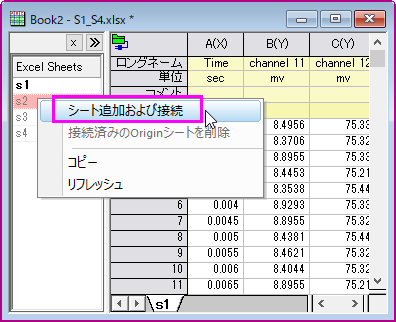

データのインポート
データのインポート
概要
Originは、さまざまなデータインポートの方法を提供しています。その中で最も強力でフレキシブルな方法はデータコネクタです。このチュートリアルでは、データコネクタを使用したローカルファイルおよびオンラインの表のインポートについて説明します。
学習する項目
- データコネクタでCSV・Excelファイルをインポートする
- Webサイトのデータをインポートする
- データを保存・再読み込みする
ステップ
| Note: このチュートリアルで必要なデータはこちらからダウンロードしてください。
|
大きなサイズのCSVデータに接続する
- 新規プロジェクトを開始します。空のワークブックがアクティブな状態で、メニューからデータ：ファイルに接続： Text/CSVを選択します。
- ファイルを選択するダイアログで、ダウンロードしたサンプルデータを保存したフォルダを開き、Multichannels.csvというファイルを選択します。開くボタンをクリックします。
- CSVインポートオプションダイアログで、列名、単位などのファイルヘッダ行は自動で検出されます。OKボタンをクリックすると、それに応じてファイルをインポートされます。
- CSVコネクタは、コンピュータのマルチコアを最大限に活用し、7列200万行のこのデータセットをインポートするのに数秒しかかかりません。ISO日時形式は自動検出され、正しくインポートされます。
- メニューファイル: プロジェクトの保存を選択してプロジェクトをmulti_channel.opjuと名前を付けて保存します。この例のようにインポートされたデータが大きい場合、プロジェクトファイルを小さくするために保存時に除外されます。保存したプロジェクトからデータを除外したくない場合は、ワークシートの左上隅にあるコネクタアイコンをクリックし、保存時にインポートデータを除外をオフにします。
複数シートのExcelファイルに接続する
- 前のセクションで保存したプロジェクトファイルを引き続き使用します。新規ワークブック ボタン
 をクリックして新しいワークブックを作成します。メニューからデータ：ファイルに接続：Excelを選択します。
をクリックして新しいワークブックを作成します。メニューからデータ：ファイルに接続：Excelを選択します。
- ダウンロードしたサンプルデータを保存したフォルダを開きます。ダブルクリックしてS1_S4.xlsxというファイルを選択します。
- Excelインポートオプションダイアログで、以下のようにヘッダ行を指定します。OKボタンをクリックし、ファイルをインポートします。

- この例のようにExcelファイルに複数のシートが含まれている場合、いずれかのシートをインポートすると、ブックの左側にあるデータナビゲーションパネルがオンになります。インポートされたシートは太字の名前で表示され、他の淡く表示された名前は、シートがまだインポートされていないことを示します。1つまたは複数のシートを選択し、右クリックしてシートの追加と接続を選択し、それらに接続できます。
- 
- s1ワークシートを選択状態にします。作図 > 基本の2Dグラフ: 複数Y軸: Yオフセット付き積上げ折れ線を選択してグラフを作成します。
- プロジェクト保存ボタンをクリックし、プロジェクトを保存します。
Web上の表に接続する
ローカルファイルからのデータのインポートに加えて、オンラインのファイルまたはWebページ上の表に接続できます。このセクションでは、Webコネクタを使用してウィキペディアの表に接続します。
- 前のセクションで保存したプロジェクトファイルを引き続き使用します。新規ワークブックボタン をクリックして、新規ワークブックを作成します。メニューからデータ：Webに接続を選択します。
- 開かれたダイアログで、次のURLをコピーして貼り付けます。
https://en.wikipedia.org/wiki/World_population
- ブラウザには、利用可能なテーブルとディメンション情報が表示されるため、インポートする表を簡単にナビゲートして選択できます。この例では、上のリストから表「10 Most Densely Populated Countries」を選択し、下矢印ボタンをクリックして下のパネルに追加します。
OKボタンをクリックし、データをインポートします。
- ボタンをクリックしてプロジェクトを保存します。
- 新規プロジェクトボタンをクリックし、現在のプロジェクトを閉じ、空のプロジェクトを開きます。
- メニューからファイル：最近使ったプロジェクトを選択し、リストから multi_channel.opju を選択して先ほど保存したプロジェクトを再び開きます。接続されたデータを含むOriginプロジェクトファイルを再度開くときに、2番目のセクションでインポートしたExcelデータのように、データが保存されたプロジェクトから除外されている場合、ワークブックのコネクタアイコンが黄色になります。グラフウィンドウにはダウンロードアイコンもあります。これをクリックしてそのグラフの接続データを取り込むか、ワークブックのコネクタアイコンをクリックしてすべてのブックをインポートを選択し、すべてのブックのデータを再読み込みします。
 | インポートされたデータはデフォルトでは保護されており、編集することができないことに注意してください。以下のヒントをご覧いただけます。

- ワークシートの左上隅にある緑色のアイコンをクリックし、シートを接続しないまたはデータコネクタを削除をコンテキストメニューから選択します。
詳細は、こちらのページを参照してください：データコネクタを使用するときにデータの編集を許可するにはどうすればよいですか？
|